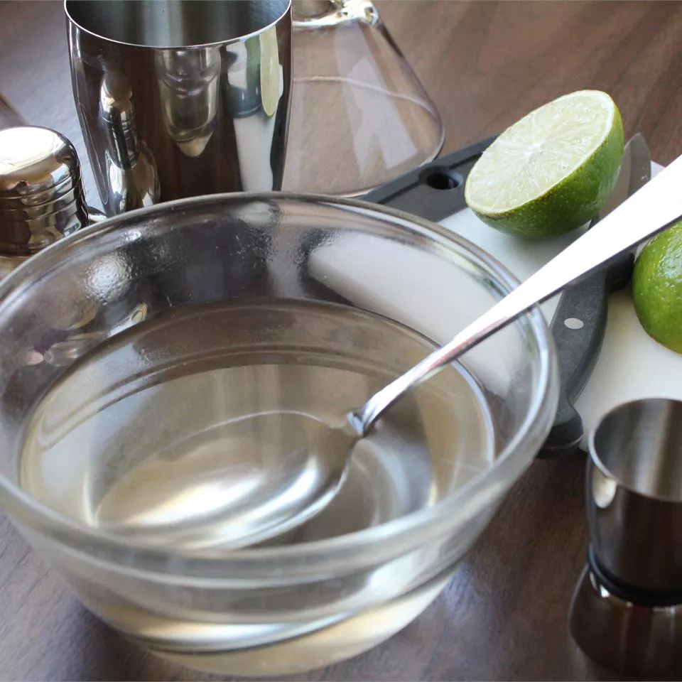

Simple Syrup

Description
"Skip the store-bought stuff and make simple syrup at home with just two ingredients you already have on hand."
Ingredients
- 1 cup white sugar
- 1 cup water
Steps
- Combine sugar and water in a medium saucepan over medium heat; bring to a boil, stirring, until sugar has dissolved. Allow to cool.
- Pour into a clean jar and seal with a tight-fitting lid; store in the refrigerator for up to one month.
Source
allrecipes.com